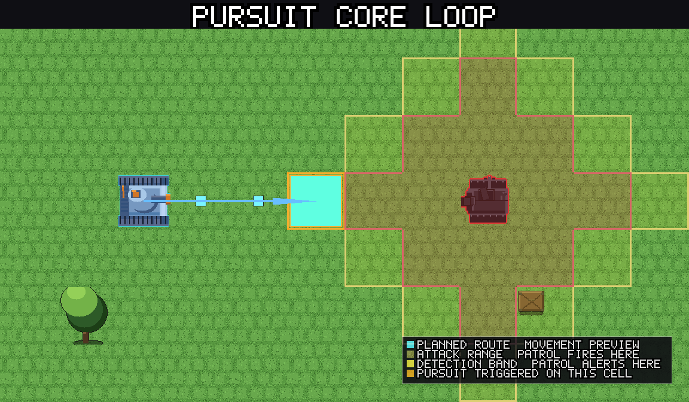
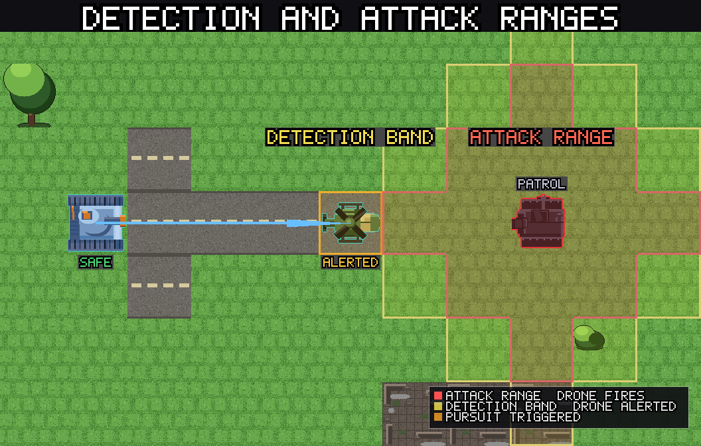
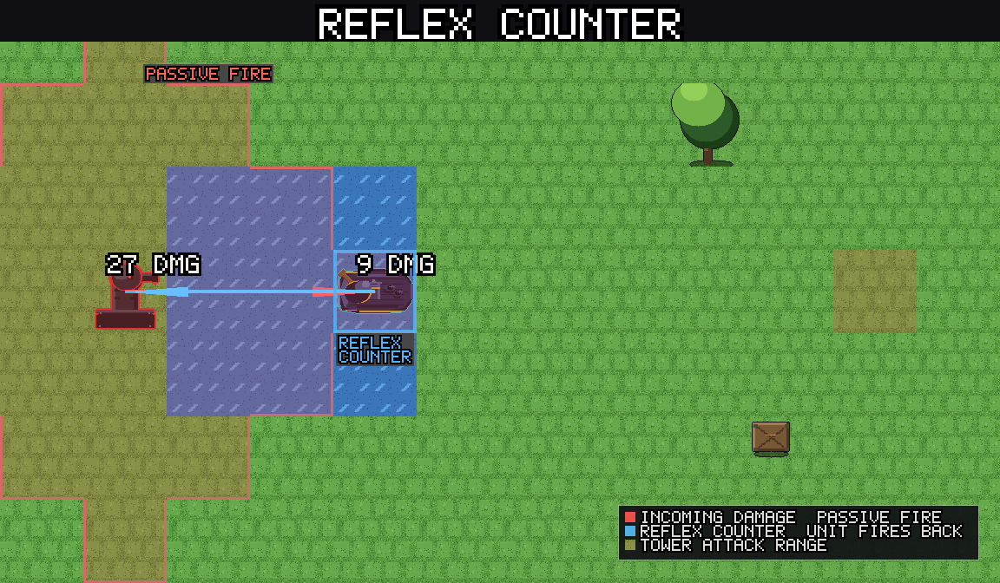
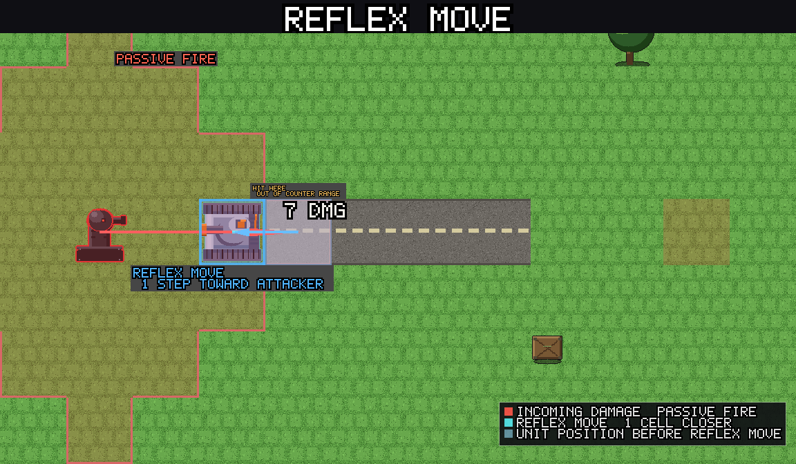
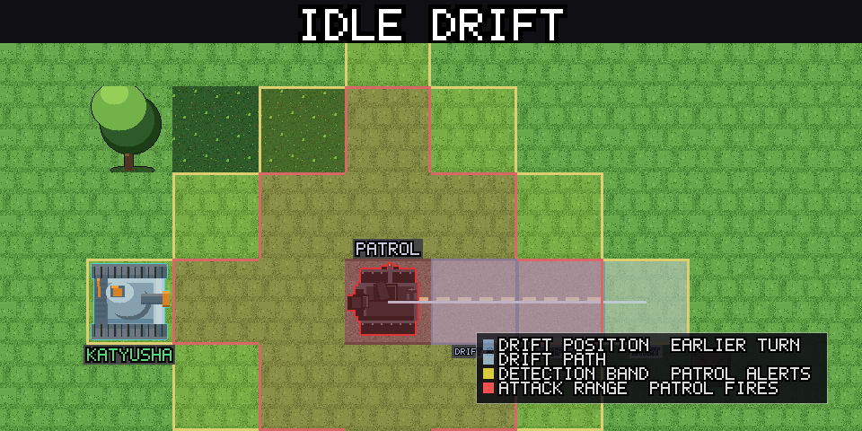

A New Take on Round-Based Strategy: Reactive Turns¶
What Makes This Different¶
Most turn-based strategy games give each unit a fixed movement range and an "end turn" button. Enemies wait patiently until you finish every action, then take their entire turn at once. This creates a predictable rhythm but also an unrealistic one: units can sprint across open ground with impunity, and positioning only matters when it is your opponent's turn to move.
Panzer Island replaces this with a reactive turn system. The core idea is simple: every time one of your units moves or attacks, every drone in detection range reacts immediately. There is no "end turn." You act freely, but every action has consequences the moment you take it.
The Core Loop¶
Every player action follows the same structure:
1. Select a unit
2. Plan a route (move, attack, or both)
3. The unit takes one step
4. Every drone in detection range reacts to that step
5. Repeat steps 3-4 until the route is complete
6. If an attack was planned, the unit fires
7. Every drone in detection range reacts to the attack
8. Drones that haven't fired yet may fire at other units
9. Non-acting units may counter-attack or reposition reflexively
10. Idle drones drift one step
There is no "enemy phase." Drones react during your own action, in real time (or rather, step by step). You see every shot as it happens.

When a mobile drone detects your unit at the edge of its detection band, it alerts and begins pursuit, closing distance every step:

Movement: No Fixed Range¶
Your units do not have a movement range in the traditional sense. Any walkable cell on the map is reachable in a single action. The cost of moving is not a hard limit on distance. It is the cumulative drone fire you absorb along the route.
Every cell you cross triggers a reaction from every drone that can see you at that moment. A straight line across open ground under three guard towers is much more expensive than a route through forest cover that breaks line of sight. The game's route preview shows you exactly which cells are dangerous, and the estimated damage, before you commit.

Waypoints. You can add intermediate waypoints to your route by tapping intermediate cells. This lets you route around danger zones or use one unit to draw drones into a position where another unit can attack them.
Drag or tap. On touch screens you can drag your finger along the desired path; on desktop you tap each waypoint. Either way, the preview updates in real time.
Drone Detection and Reaction¶
Every drone has an attack range (how far it can hit) and a detection
band one cell wider (attack range + 1). When your unit enters that band,
the drone reacts.
The reaction happens in two passes:
Pass 1: Alert and queue attacks. Every drone in range evaluates your moving unit. Stationary types (guard towers, artillery) fire if you are within attack range. Mobile types (patrols, interceptors, cruisers) become alerted and queue a shot if in range, or begin pursuit if you are in the detection band but not yet in attack range.
Pass 2: Fire and animate. Each queued attack plays a projectile animation and applies damage. Iron Curtain counters (if active) fire back after all projectiles resolve.
Pass 3: Pursuit step. Every alerted mobile drone takes one step toward your unit. If that step brings it into attack range, it fires immediately from its new position. This is critical: a multi-cell move cannot outrun pursuit because the drone moves after every single step, not just at the end of your action.
Drone Type Behaviors¶
| Type | Behavior |
|---|---|
| Guard Tower | Stationary. Fires every time a unit steps into range. |
| Patrol | Mobile. Alerts and fires when in range; pursues one step per action-step while alerted. |
| Sentinel | Stationary until alerted by another drone's reaction nearby. Then fires like a guard tower. |
| Interceptor | Mobile, aerial (ignores terrain). Same alert/pursue as patrol, but faster at closing distance due to terrain immunity. |
| Artillery | Stationary, long range. Fires when a unit enters its wide radius. Cannot move. |
| Cruiser | Water-only mobile. Same alert/pursue as patrol, restricted to water cells. |
| Nexus / Nexus Light | Stationary boss. Fires at anything in range every action; retaliates with an AoE pulse when damaged. Nexus summons an escort every 3 player actions. |
| Relay Node | Stationary, no attack. Boosts attack range of nearby drones while alive. |
| Spotter | Stationary, no direct attack. Marks units in range, increasing damage they take from other drones. |
| Repair Drone | Aerial mobile. Heals damaged allies within repair radius, or moves toward them if too far. |
| Detonator | Mobile kamikaze. Chases the nearest unit. If it reaches adjacency, it self-destructs in a blast that hits all units within one cell Manhattan. Any single attack destroys it. |
| Rocket Launcher | Stationary. Charges a counter every action step; at 5 charges fires a heavy AoE barrage at all units within range. |

Pursuit and Break Off¶
When a mobile drone becomes alerted, it enters pursuit mode. It takes one step per player action-step toward the nearest reachable unit. The drone prioritizes the unit that triggered its alert but switches to the closest reachable target if that unit moves out of its detection band.
A drone breaks off pursuit when no unit is within its detection band
(attack range + 1). When it breaks off, it stops moving and a flash
indicates it is no longer tracking you. Drones that break off do not
immediately re-alert if you step back into range next action. They react
freshly on your next move.
The game draws a pursuit outline on the map preview: orange cell borders around every drone that would alert and pursue along your planned route. You can see exactly what you are waking up before you commit.
Passive Fire¶
Drone reactions only fire at the acting unit, the one that just moved or attacked. But what about your other units standing in drone range while Katyusha advances?
At the end of every action, a passive fire pass runs. Every drone that did not fire during the action's reaction phase shoots at the closest non-acting unit within its attack range. Each drone fires at most once per action, and the shot goes to the closest eligible target (Manhattan distance ties broken by unit order).

This means you cannot safely leave Maria parked in a cruiser's range while Nadeshiko moves elsewhere. Standing in range is dangerous even when you are not the one acting.
Reflex Responses¶
When a non-acting unit takes damage from passive or pursuit fire, it may reflex: react without waiting for you to select it. Two types:
Reflex counter. If the damaged unit has a drone in its own attack range, it fires back immediately. This is a free attack, does not consume an action, and happens once per unit per action. A unit that already counter-attacked cannot counter again in the same action (no infinite chains).

Reflex move. If the damaged unit has no drone in attack range but
reflex move is enabled (on by default), it takes one step toward the nearest
threatening drone. This helps close the distance so your unit can attack on
its next action. Reflex move is suppressed for units that have a queued
action, so their planned route is not disrupted.

(Reflex is currently limited to Chapter 1 Stage 6 onward and can be toggled in options.)
Idle Drift¶
Non-alerted mobile drones do not stand still forever. During the end-of-action tick, each one takes one step toward the nearest reachable unit that it can target. The priority order is Katyusha → Nadeshiko → Maria (by proximity, with this tiebreak).

A patrol that cannot see you yet will drift one cell closer every action. This means you cannot safely bypass a patrol by staying out of its detection band indefinitely. It will eventually close the gap and become a threat.
Stationary drones (guard towers, artillery, nexus) do not drift.
Limit Breaks and Iron Curtain¶
Limit Breaks are special abilities that charge over the course of a stage. Each unit has its own gauge (0-100), which fills by dealing and receiving damage. When full, you can trigger the Limit Break instead of a normal action.
- Katyusha: Iron Curtain: Activates a protective counter-shield. While active, incoming damage is blocked and she counter-attacks up to 2 unique drones that fire on her (3 with the Extended Curtain skill). Hits beyond the cap deal damage normally.

- Nadeshiko: Storm Run: Dashes in a straight line, damaging every drone adjacent to any cell on the dash path. She can walk into position first if the target is outside placement range. Drone reactions resolve after the dash completes.

- Maria: Broadside: Fires a 3x3 barrage centered on a target cell, damaging every drone in the square. She stays in place (she can reposition first). Drone reactions from the barrage are suppressed. Drones take damage but do not counterattack.

Limit Breaks reset to zero at the start of each stage and can charge multiple times within a stage if the unit keeps dealing and receiving damage. There is no per-stage cap.
Sectors (Multi-Layer Stages)¶
Many stages are split into sectors (called layers internally). You clear one sector, then advance to the next. Each sector transition:
- Plays a "SECTOR N/M" banner
- May play a short cutscene
- Shows a tutorial tip if relevant
- Respawns drones for the new sector
- Preserves your units' HP, limit gauge, and position
- Units that were destroyed in a prior sector do not return
On Easy difficulty, every action creates an undo checkpoint. You can browse back through the current stage's checkpoints and restore to any prior state, even across sectors.
Queue Mode¶
Enabled by default, Queue Mode lets you plan multiple units' actions before executing any of them. Instead of confirming each action immediately, tap Add to Queue to stack plans, then tap Execute to run the entire batch in order.
When the queue executes, each planned action runs fully (move + reactions + attack + passive fire + reflex) before the next plan begins. This lets you sequence a multi-unit assault: Katyusha walks in to absorb tower fire (and her Iron Curtain counters), then Nadeshiko dashes through the alerted drones while they are still targeting Katyusha.
You can cancel the queue mid-execution. Completed plans stay resolved; remaining plans return to the queue bar.
Key Takeaways¶
-
Movement is damage. Every cell is a potential hit. Prefer short routes through cover over long sprints across open ground.
-
Pursuit compounds. A multi-cell move against an alerted interceptor triggers it every step, both as a reaction and as pursuit fire. One long move can absorb more damage than several short moves with pauses.
-
Spread the damage. Drones fire at the acting unit per step but switch to parked units during passive fire. Rotate which unit advances so no single unit absorbs all the fire.
-
Watch the pursuit band. Drones alert one cell beyond their attack range. You can bait a patrol into overextending by stepping to the edge of its detection band, then pulling back while it pursues into your other unit's attack range.
-
Priority targets. Relay nodes and spotters multiply the threat of nearby drones. Eliminate them first. Detonators die in one hit. Deal with them before they reach your line.
-
Reflex is free damage. Park a hard-hitter (Katyusha) in guard tower range during another unit's action. The tower fires at her (passive), she reflex-counters for free, and you did not spend an action on it.
-
Limit Breaks charge faster under fire. If you need a Limit Break for the next sector, let the unit take some hits to charge its gauge. Damage received fills the gauge faster than damage dealt.
-
Sectors reset the board, not your units. HP and limit gauge carry forward. Use the last actions of a sector to position your units favorably and charge limit gauges for the next sector.
-
Break off resets the drone. A drone that breaks off pursuit clears its alert state. If you can outrange it for one full action, it stops chasing and you reset the engagement.
Play Panzer Island now on Steam, Google Play, or in your browser on itch.io. You can also try the combat-focused Reddit game. Or read the webnovel.